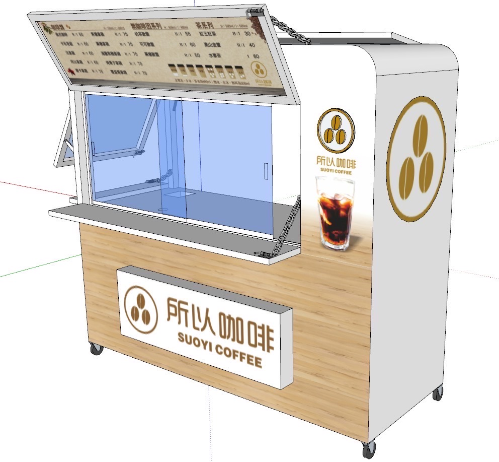
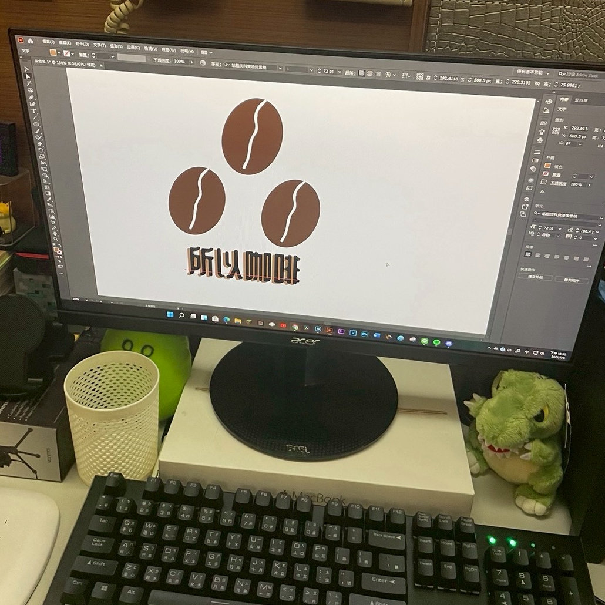
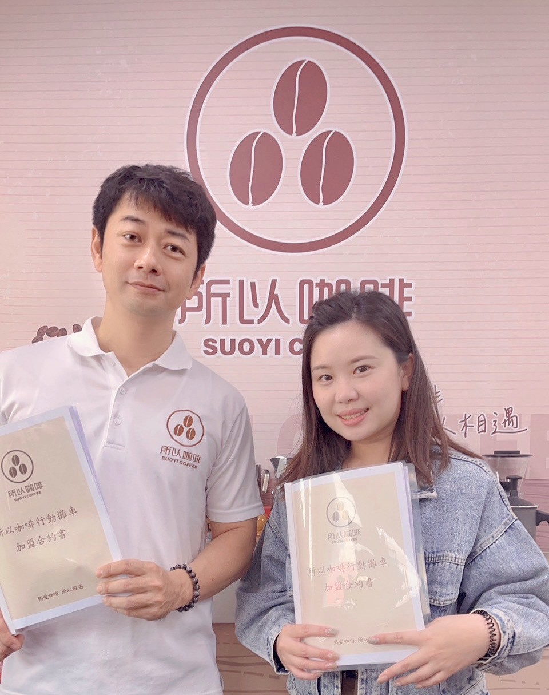

OUR STORY
從一台餐車，
從一台餐車，
到城市的咖啡角落。
2021 年，高雄仁武。我們將對咖啡的熱愛裝進不鏽鋼餐車裡，
只想證明一件事：平價！也能擁有精品的靈魂。

THE ORIGIN
移動的精品咖啡館
「所以咖啡」的起點，是一台閃著銀白色光芒的不鏽鋼餐車。不同於一般路邊攤的隨性，我們堅持將專業的義式咖啡機、五道式 RO 純水系統，全部搬進了這台移動城堡裡。
我們希望這杯咖啡，能成為您忙碌生活中的那個「逗號」，讓您找到一個停下來休息的理由。

THE IDENTITY
三顆豆子的安定力量
我們的 Logo 是由三顆咖啡豆排列而成的圓。這不僅僅是咖啡的象徵，更蘊含了深層的品牌信仰：
-
穩定的結構
三點成面，象徵著品牌如「佛、法、僧」三寶般的安定與堅持。 -
循環的善意
代表著「熱愛 (Love)、分享 (Share)、相遇 (Encounter)」的正向循環。
「熱愛咖啡，所以相遇。」
我們不賣高不可攀的藝術品，我們賣的是您每天都能負擔的平價奢華。從高雄到全台，我們的初衷從未改變——做一杯讓您每天都想喝的好咖啡。
— 所以咖啡 創辦人 - 曾偉修
GROWTH & TRUST
穩健成長，值得信賴
從一台車到一家店，再到全台佈局，我們走得慢，但很穩。
2021 起源
高雄仁武大智路，第一台餐車正式營運。
2022 扎根
開設第一間實體店面，建立標準化 SOP。
2023 拓展
新興新田店、左營富國店相繼開幕，口碑發酵。
2024 展望
開放加盟體系，進軍台南市場，讓更多人遇見所以。

誠信加盟
公開透明的合約與輔導